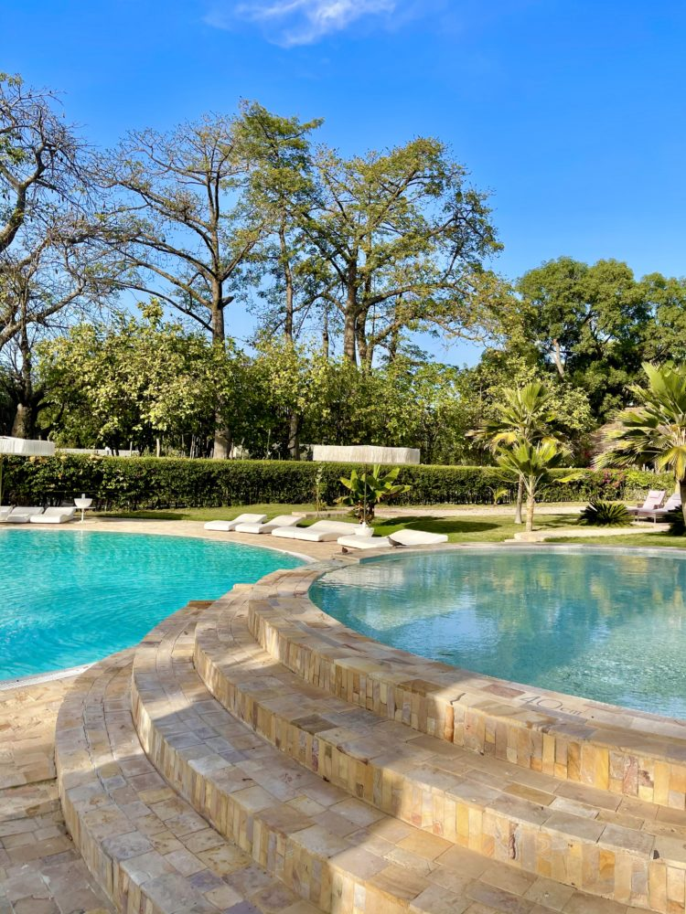
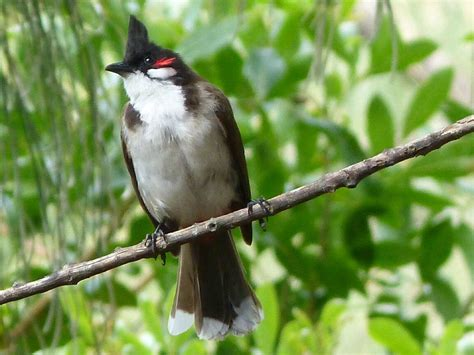
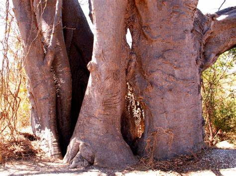
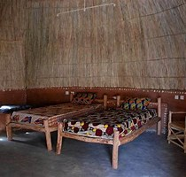
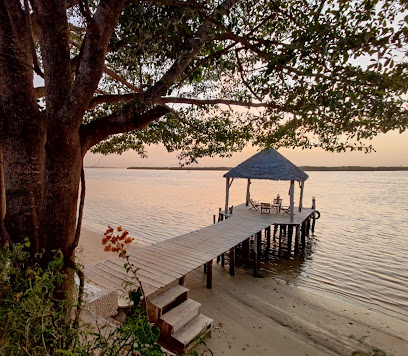
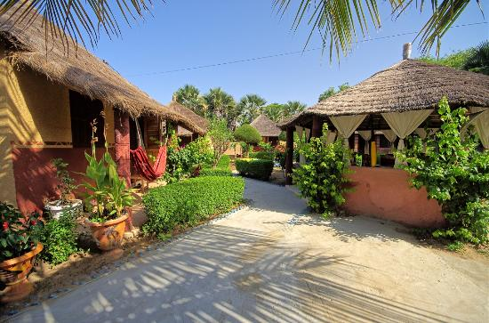
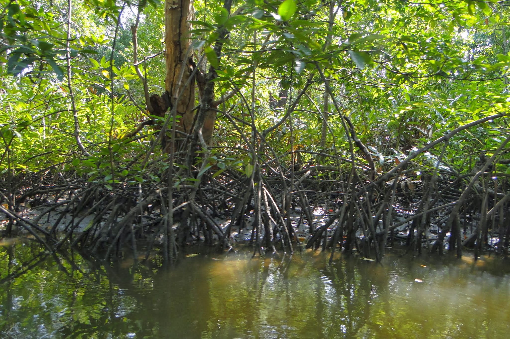
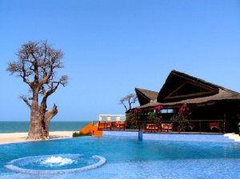
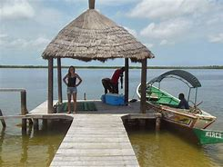

Toubakouta
Toubacouta (ou Toubakouta) est un village du Sénégal, situé dans le sine-Saloum à une quarantaine de kilomètres au sud de Foundiougne, entre Sokone et Karang Poste.
En décembre 1887, la ville est le siège de la bataille de Toubacouta, qui voit la défaite des troupes de Mamadou Lamine Dramé face aux troupes coloniales françaises1.
Le tourisme se développe grâce aux possibilités de pêche dans les bolongs, de chasse dans une zone très étendue, d’excursions et de découverte des animaux.
Le village se trouve à proximité du Parc national du delta du Saloum.
On y produit également du miel de mangrove.
Maps

île des oiseaux ou sarpan
Le nom de cette île a longtemps fait penser qu’elle était infestée de serpents, mais ce nom proviendrait en fait d’une déformation de « îlot Sarpan » (il n'est pas rare de trouver sur les cartes géographiques coloniales la dénomination « île Serpens »), du nom d’un sergent rebelle de l’armée française qui y aurait été déporté, et dont on ne sait pas grand-chose si ce n’est qu'il aurait demandé et obtenu l’autorisation de s’y installer définitivement, d'où ce qui est considéré par certains comme une disparition.
Sur l'île se trouvent les ruines de sa cabane qui aurait été la case construite par un certain Lacombe, habitant de Gorée qui a fréquenté l’île de la Madeleine où il prenait des blocs de basalte pour ses constructions. Il a également transplanté un baobab sur la place publique de l’île aux esclaves et que l'on peut encore admirer de nos jours.
Maps

les tours
Partout dans le tiritoire on note la presence des tours mystique une en est : les baobabs dont on a le droit d'en voir qu'un ou d'ailleurs tout les nationalités frequente pour des mystique et autres.
Maps

les hotels
Le lodge-hôtel Keur Saloum à Toubacouta (www.keursaloum.co), dont le nom est intimement associé à l’écologie et à la protection de la biodiversité, a décidé de développer avec des partenaires sénégalais et européens des activités liées à la découverte, l’observation, la connaissance et la protection des oiseaux du Sénégal.
Le Sénégal est, en effet, un des pays d’Afrique de l’Ouest ou l’avifaune est la plus importante en variété et en quantité. Rien d’étonnant à ce constat, car la diversité des biotopes y est inestimable: du nord au sud du pays, sans oublier une façade maritime de plus de 700 kms, les sites ornithologiques les plus divers se succèdent à un rythme soutenu.
Maps

Mar Lodj
Mar Lodj (parfois Mar Lothie, plus rarement Mar Lyotch, Mar Loytch, Mar Lotche) est un village, de l'île de Mar, située dans le Sine-Saloum au Sénégal à proximité de Ndangane — où se trouve l'embarcadère — et à une quarantaine de kilomètres de Joal-Fadiouth. Les trois arbres sacrés entrelacés L’ile de Mar qui est composé de 3 villes, Mar lothie, Mar Fafaco et Mar Soulou. L'île est rattachée à la région de Fatick. Les villages font partie de la communauté rurale de Fimela.
Maps

Village de ngangane sambou
Véritable trait d’union avec les îles du Saloum, Ndangane Sambou, situé dans la commune de Fimela, a connu une expansion rapide. Le quotidien de ce village qui s’est fortement développé se conjugue avec la pêche et le tourisme. Entre tradition et modernité, Ndangane qui conserve son authenticité et combine ses coutumes et ses activités traditionnelles de pêche avec celles d’accueil et d’animation cherche encore son équilibre.
Maps

La mangrove
La mangrove est un écosystème de marais maritime incluant un groupement de végétaux spécifiques principalement ligneux, ne se développant que dans la zone de balancement des marées, appelée estran, des côtes basses des régions tropicales.
Maps

Palmarin
En suivant toujours la côte, on rencontre le village de Palmarin, appelé aussi le grand Guioala ou grand Joal. Situé à l'embouchure d'une rivière à laquelle il donne son nom, entouré d'un côté par la mer, de l'autre par des marais, ce village se croyait à l'abri de toute incursion. Les habitants, enhardis par leur position, refusèrent de payer les impôts, et massacrèrent même les collecteurs ; mais le bour-sin, ayant découvert un gué, passa dans l'île avec son armée, tomba à l'improviste sur les habitants, et les réduisit la plupart en esclavage.
Maps

Etc.
Le delta du Saloum se localisant au Sénégal dans le village de ndangane est apparu en 1976.
Avec une superficie de 76 milles hectares, il est composé d’ilot merveilleux, de la savane, d’activité, palétuvier et de l’élément humain ; autant un cadre tout campe pour s’épanouir.
Cette île est composée par ailleurs aussi de 3 écosystèmes :
Partie continentale ;
Partie fluviale ;
Partie Forester ;
Elle est reconnue comme patrimoine mondial par l’Unesco.
Etc.